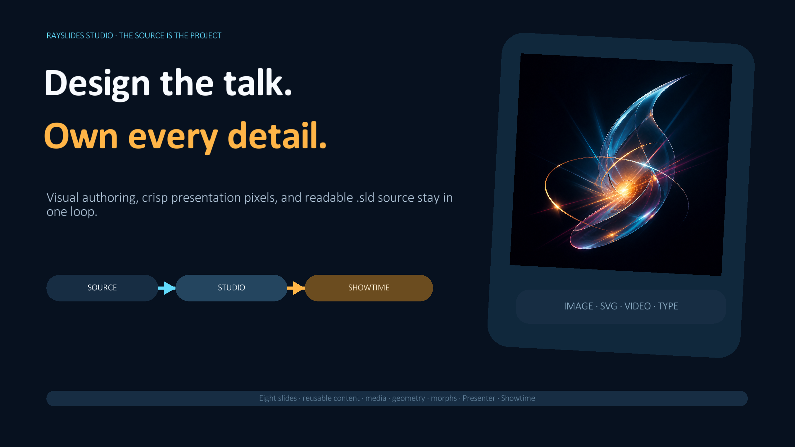
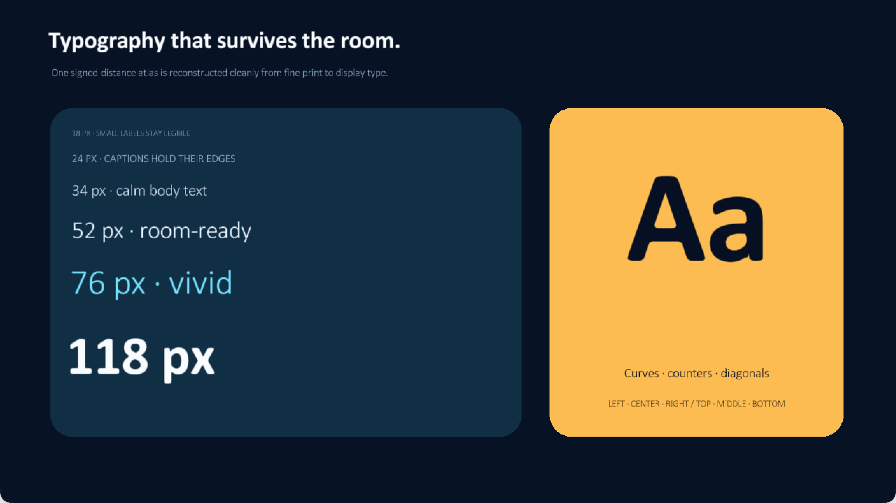
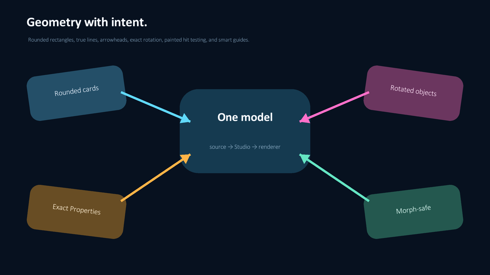
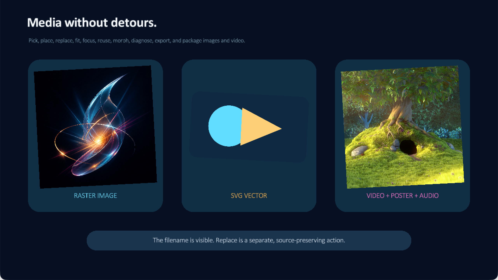
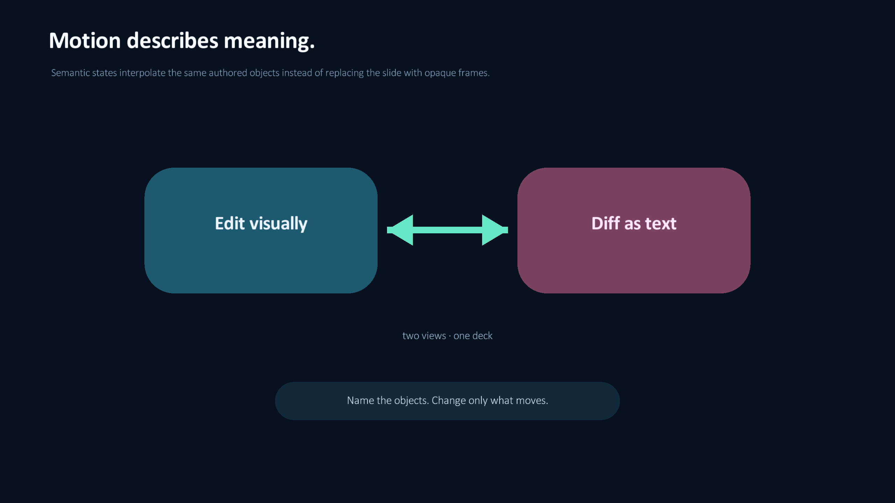

Rayslides documentation
Build, edit, and present .sld decks.
Rayslides gives you a visual editor and a readable source file. Both views edit the same deck.

See what one source model can render
These are direct presentation captures from one source-native showcase deck—not mock-ups of future features.




Author the same deck in Studio
The complete showcase remains editable: slides, reusable items, groups, templates, media, object properties, and morph states all resolve back to .sld source.

.sld file instead of a second project format.Choose a guide
Start with a task. Each guide shows the source, the interface, and the result.
Get started
Build Rayslides. Create a deck. Save it as an .sld file.
Use Studio
Select objects, edit values, arrange layers, and manage reusable content.
03Animate a deck
Use reveals, slide transitions, and semantic morph states.
04Use a phone
Read private notes. Change slides. Point and draw on the live slide.
05Run a poll
Let the audience join and vote through the local network.
06Write .sld source
Define slides, objects, templates, groups, text, images, and colors.
07Use a live camera
Place, crop, rotate, start, stop, and export a live camera feed on macOS or Linux.